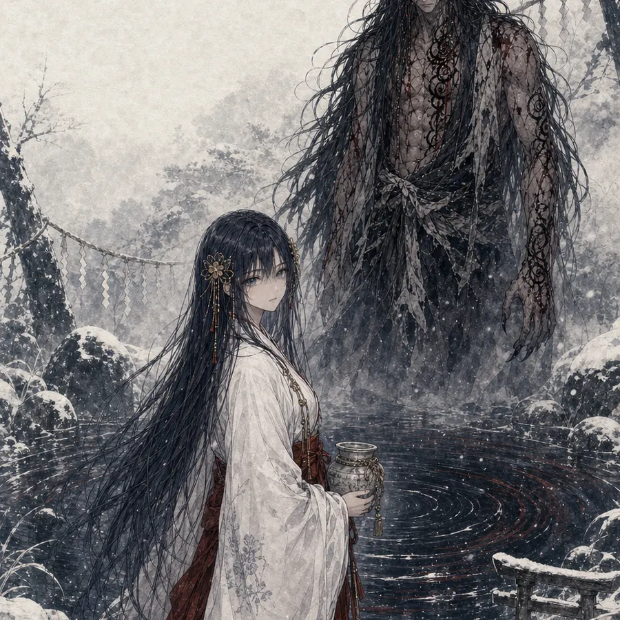
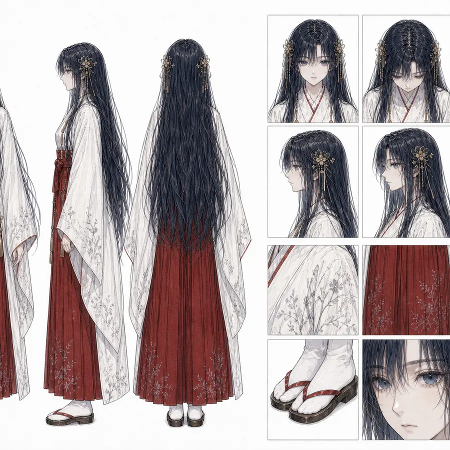
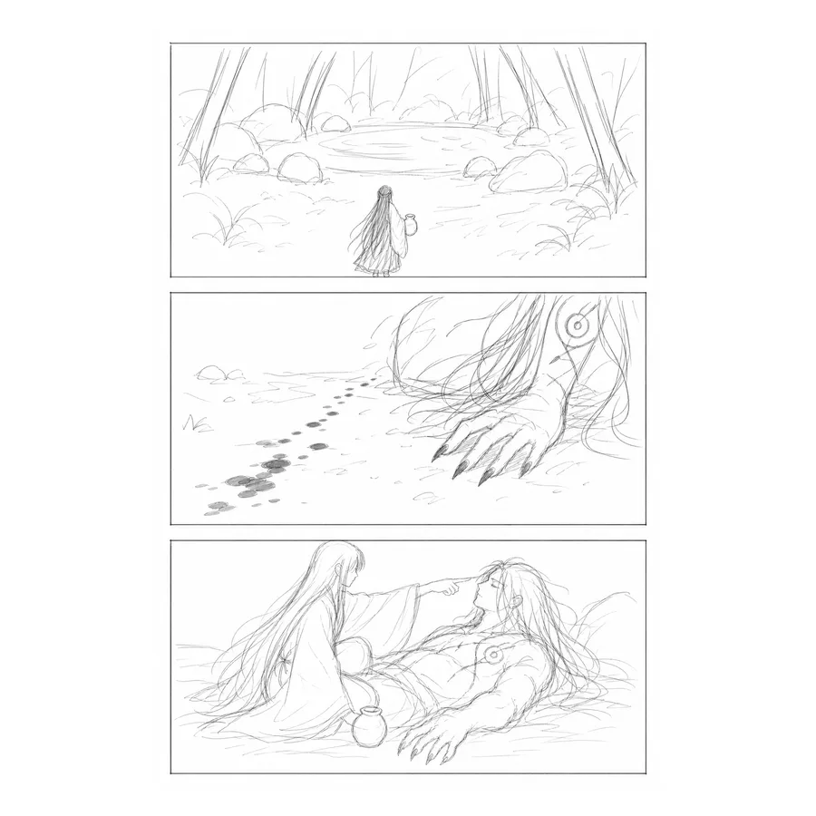
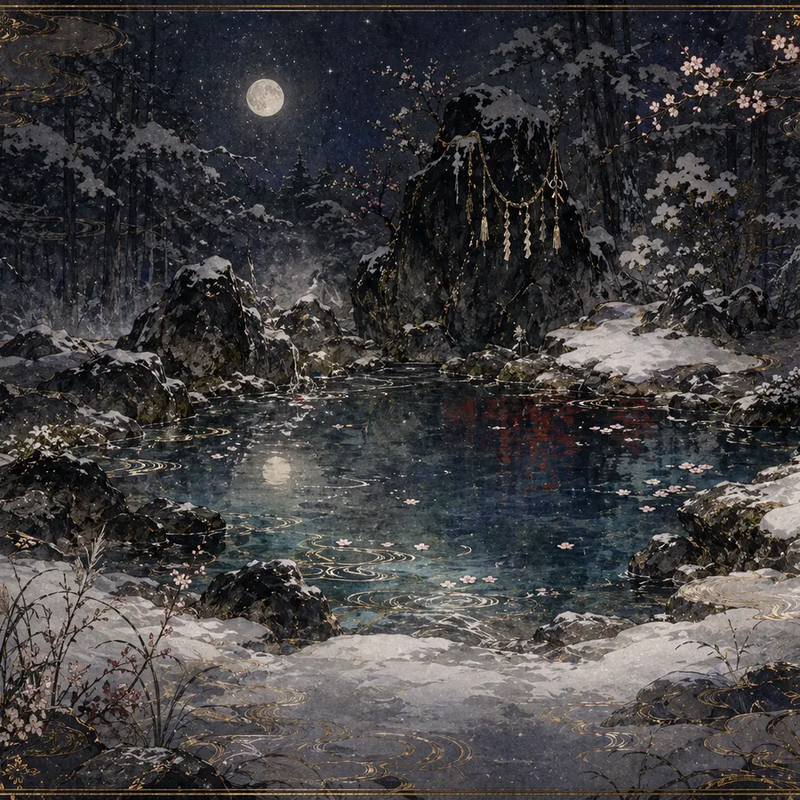

Original
雪泉の邂逅
雪夜の泉に、ひとりの巫女が現れる。静けさから物語が始まる。
12sNo audio
Featured Saga
斎院あやの旗艦作品。雪の泉、神水、荒御、結界戦を軸に、和の神話性とAI映像のスピードを接続する。
水が舞い、雪が降り、静けさが戦いへ変わる。短い映像の断片から、長編の気配を感じてください。
Works Gallery
雪の泉の青、神水のきらめき、ピンクの煙の夜。斎院あやの作品世界を短いクリップで見られます。
雪夜の泉に、ひとりの巫女が現れる。静けさから物語が始まる。
神水が弧を描き、衣がほどけるように動く。祈りが映像になる。
静かな神域に荒御が踏み込む。空気が変わる一瞬を切り取る。
神の泉の物語を、より大きな画面とテンポで見せる特別版。
黒い夜にピンクの煙が揺れる。神域とは違う色で、もうひとつの世界を開く。
Rosalie and ChouChou 名義の36時間ハッカソン制作。疑念、同盟、裏切り、究極の選択が交差するサバイバルゲーム作品。
Manga Process
映像だけでなく、漫画として読める場面も制作中です。世界観、人物、絵コンテ、背景を少しずつ重ねています。

雪の泉、祈り、荒御。物語の核になる空気を絵で固める。

衣装、髪、表情、視線。映像と漫画の間で人物像を合わせる。

荒い線で場面の動きだけをつかみ、後から映像や漫画へ育てる。

泉、雪、金の線、夜空。場面が戻ってこられる場所をつくる。
物語の舞台、光、色、空気を先に決める。
衣装、表情、立ち姿をそろえ、同じ人物として動かす。
絵コンテやラフで、視線と間をつくる。
候補を見比べ、物語に残す一枚を選ぶ。
Fan Works
JJK・他作品への敬意をこめた非公式ファン創作。漫画とイラストはpixivで公開しています。
ここでは入口だけを置き、作品そのものはpixivのページで楽しめるようにしています。
World
雪の泉、星の空、金の光。古い祈りが、未来の映像として動き出す。
斎院あやの作品には、静けさと激しさ、神話と日常、青と金と煙の色が同居しています。
Connect
新しい映像、制作途中の一枚、作品の空気感はInstagramを中心に更新しています。